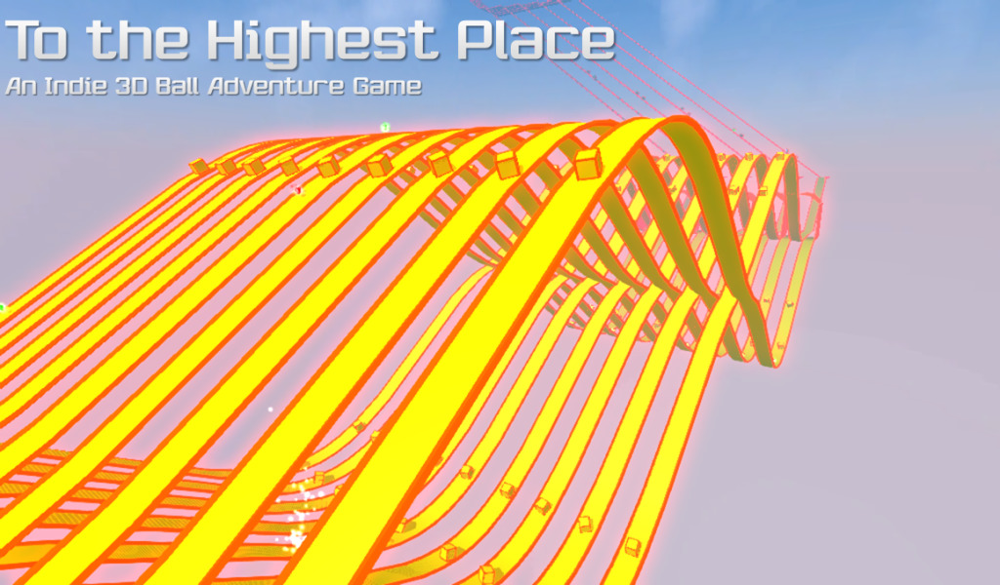

Project Showcase
This website contain summaries of all projects that I've been develop in the past, present, and future. Updated monthly.
You can use the filter below.
2017

Expertise

Oct 2017 - Interactive -In Progress
Bitmap Encoder
Oct 2017 - Tools -Archived
Engine4


Oct 2017 - Library -Active
Network Facts
Sep 2017 - Tools -Archived

Iconizer
Aug 2017 - Tools -Archived

Socket Clipboard
Jul 2017 - Tools -Active

Matrix N Programmer
Jun 2017 - Tools -Archived
Mouse Swapper
May 2017 - Tools -Archived
Badge Filmic
Apr 2017 - Graphics -Archived

Hexaball
Apr 2017 - Graphics -Archived

Me Rasterized
Feb 2017 - Graphics -Archived
2016

Camera Projecter
Oct 2016 - Library -Active

Beaker Drop

Apr 2016 - Graphics -Archived

TEXDraw
Jan 2016 - Library -Active
2015

To The Highest Place
Aug 2015 - Interactive -Archived

NEKER
Apr 2015 - Interactive -Archived
Simple Procedural Skybox
Oct 2016 - Library -Archived

Home Remake
Apr 2015 - Graphics -Archived
2014

TWIB Tool
Jul 2014 - Tools -Abandoned